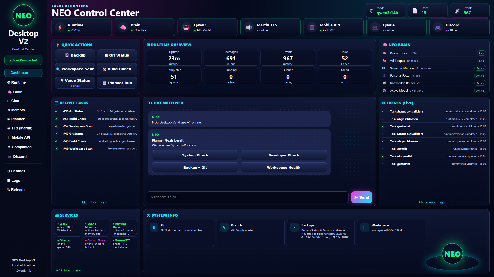

🧠 Brain
Personal Memory, Semantic Memory, Wiki, Knowledge Router V3 and Project Context.
LOCAL AI · NANOCLAW · NEO
Ich baue mit NanoClaw / NEO ein lokales AI-Runtime-System mit Desktop-V2 Control Center, Ollama, Memory, Planner, Discord Voice, TTS und Runtime Queue.
Personal Memory, Semantic Memory, Wiki, Knowledge Router V3 and Project Context.
Runtime Queue, Planner Goals, Tasks, Events, Git Status, Backup and Build Checks.
Discord Voice runtime, Martin / Kokoro TTS and local voice assistant pipeline.
Android app, mobile dictation, Companion bridge and local WebUI API.
CONTROL CENTER
